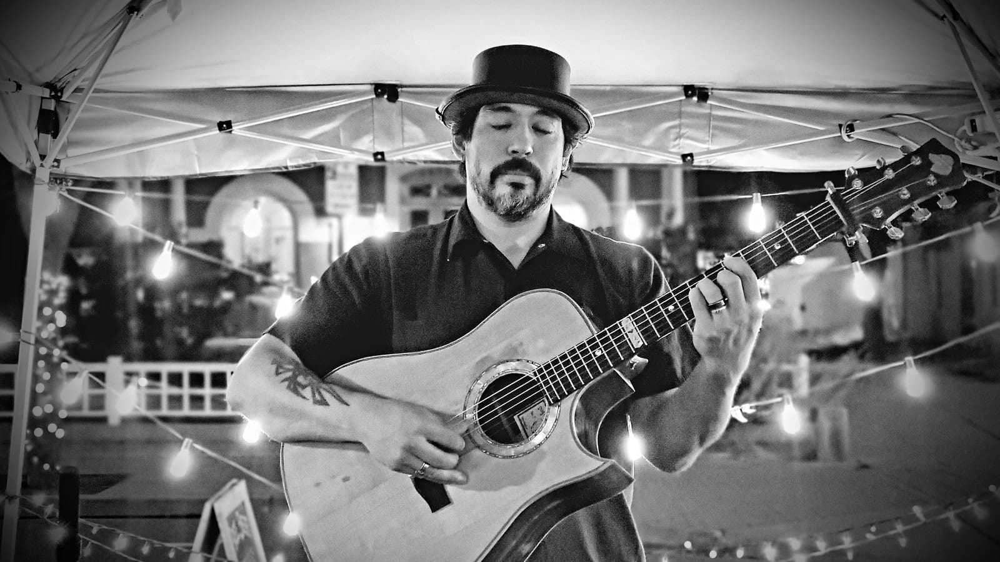

The engagement party
BOOK LIVE MUSIC IN COLORADO
Private parties & dinners
Great live music is what makes that moment likely instead of lucky.
Signet Artists serve milestone birthdays and anniversaries, engagement dinners, holiday gatherings at home, club celebrations just to name a few.
Trusted and booked by
“...We discussed what we were looking for, (funky jams) and they delivered. It was the perfect band for my husband’s 50th. They are personable, professional, and very talented musicians.”
Featured Artists
The engagement party

The milestone birthday
The backyard party
2026 Josie Music Award winner

Welcome drinks
Top 10 finalist, Wildflower! songwriting contest

The holiday party
LUXlife Wedding Band of the Year, Colorado

The Halloween party
What YOU'RE BOOKING
In our experience, most hosts guess too big.
what kind of night do you want?
Most of the requests we get look like one of these three.

Milestone birthdays
For most birthdays, a restaurant with family and friends is a perfect night. But sometimes the celebration is so important that the whole night is built to cheer on the guest of honor.
“...From beginning to end. Pulled together bandmates for my husband’s 80th outdoor birthday bash. Guests were impressed with the repertoire. More than the usual cover band: jazzy sophistication.”
Tell us the plan, and we can build a setlist for the honoree.

One request we get often for a milestone dinner at home: a table of twelve, a long dinner, and a Spanish guitarist in the corner playing something with real technique in it.
Dirty Flamenco plays the traditional forms solo or as a trio, at dinner-conversation volume, and needs no stage.
Video clips
Where
Castle Pines, Castle Rock and Evergreen are inside the no-travel-charge area too, so a party at a house in any of the three is quoted the same as Denver.
The occasions
“Moses Jones Band made our party! They are so easy to work with and you can tell they are enjoying what they do. They had us all dancing the night away. We are still hearing from our friends what a great party it was.”
Questions
Stage sizes, electrical concerns and sound needs are on the technical page.
Whether you're picturing a solo musician or a full band, just reach out and we'll help you find the right live entertainment.
Want photos or video of the party to keep? We can add them to your booking.